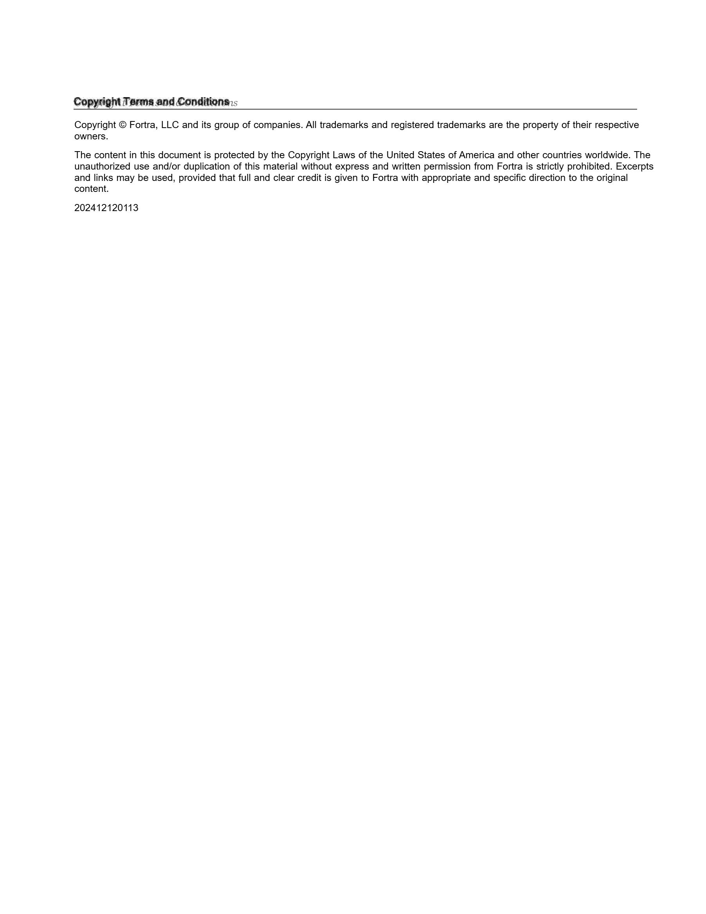
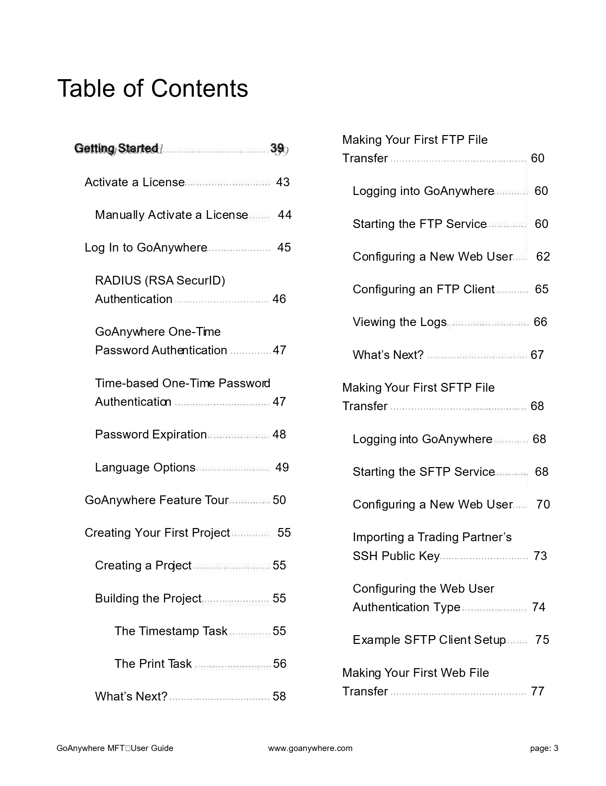
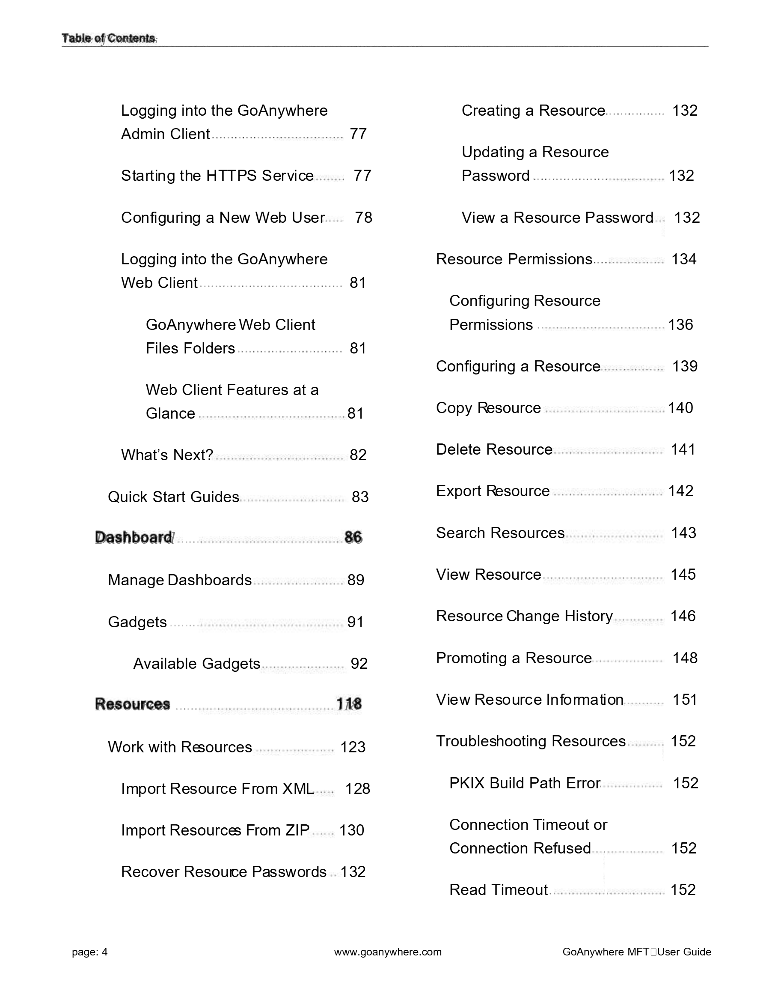
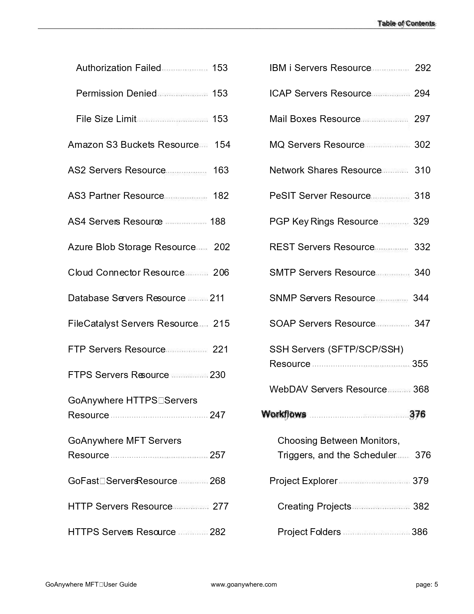
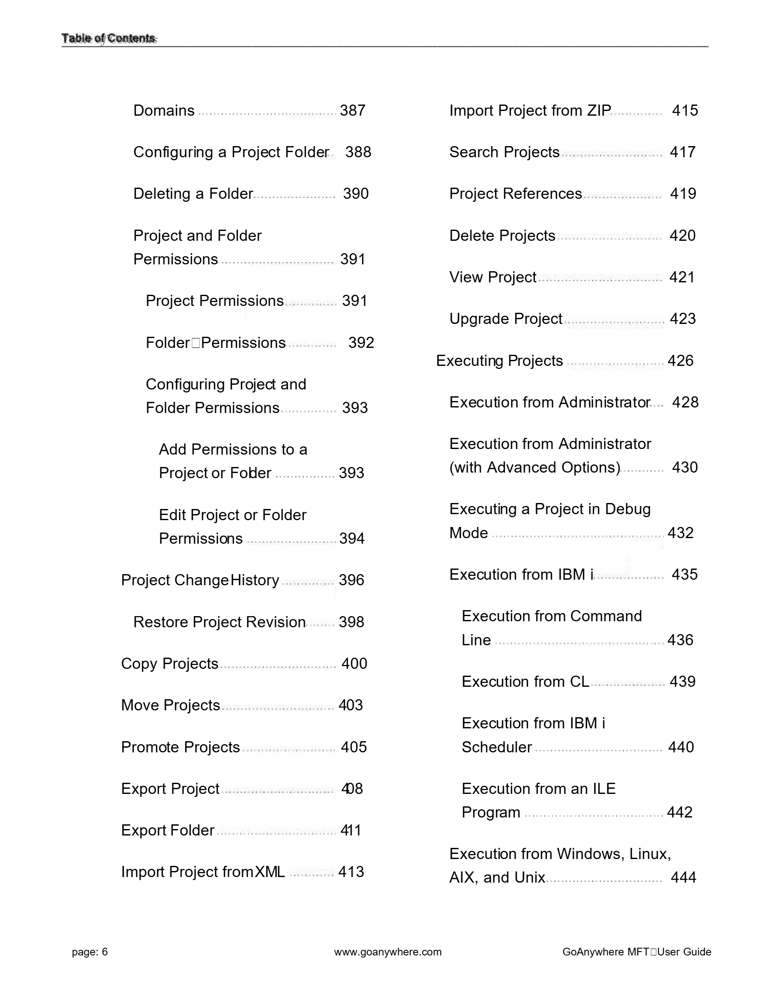
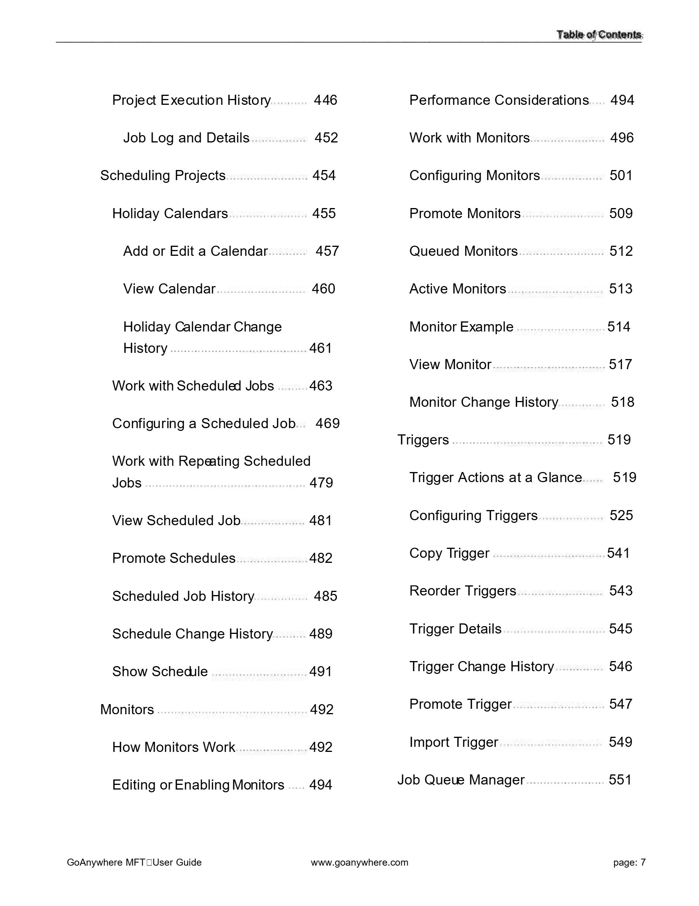
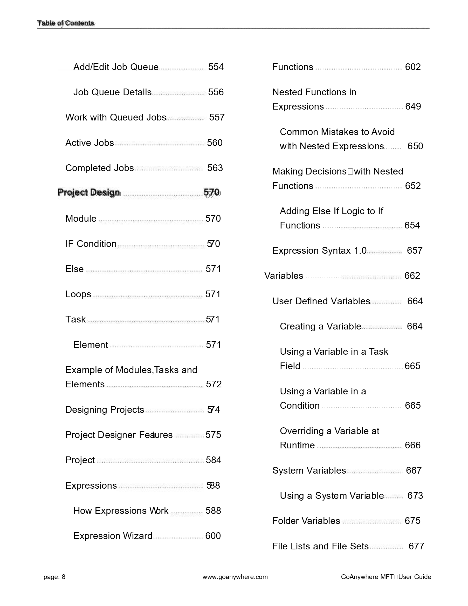
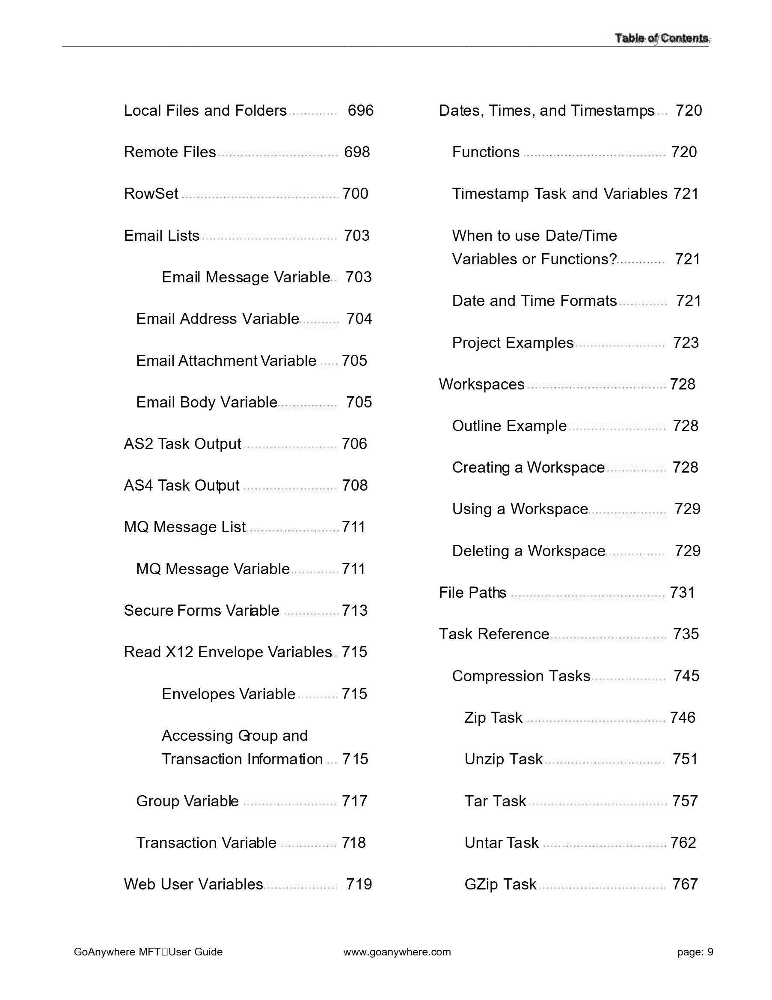
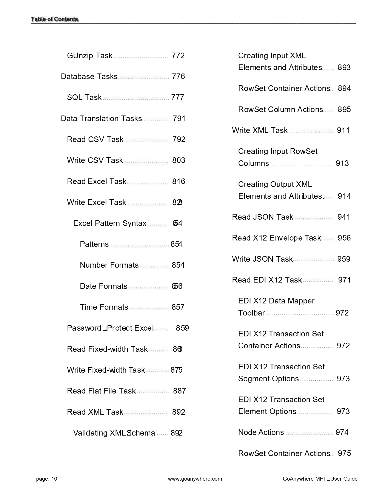

1Ficha del documento
| Atributo | Valor |
|---|---|
| Título | GoAnywhere MFT User Guide 7.7.0 |
| Identificador (slug) | goanywhere_mft_user_guide_7_7_0 |
| Páginas del documento | 3712 |
| Páginas procesadas | 10 |
| Páginas incluidas en este reporte | 10 |
| Fecha de procesamiento | 2026-10-15T23:36:49.305236 |
| Modo de extracción | primera_corrida_piloto_10_paginas |
2Inventario de páginas y densidad de texto
| Página | Imagen de soporte | Dimensiones (px) | Líneas de texto |
|---|---|---|---|
| 1 | imagenes/pagina_0001.png | 1804 × 2334 | 3 |
| 2 | imagenes/pagina_0002.png | 1804 × 2334 | 8 |
| 3 | imagenes/pagina_0003.png | 1804 × 2334 | 3 |
| 4 | imagenes/pagina_0004.png | 1804 × 2334 | 5 |
| 5 | imagenes/pagina_0005.png | 1804 × 2334 | 3 |
| 6 | imagenes/pagina_0006.png | 1804 × 2334 | 5 |
| 7 | imagenes/pagina_0007.png | 1804 × 2334 | 3 |
| 8 | imagenes/pagina_0008.png | 1804 × 2334 | 3 |
| 9 | imagenes/pagina_0009.png | 1804 × 2334 | 3 |
| 10 | imagenes/pagina_0010.png | 1804 × 2334 | 4 |
3Texto reconstruido del documento
A continuación se presenta la reconstrucción del texto nativo extraído de las 10 páginas procesadas, depurando las redundancias del visor web y estructurando títulos, párrafos y tablas de contenido:
3.1Contenido Reconstruido · Página 1
'G'o'A'n'y'w'h'e'r'e'M'F'T'U's'e'r' 'G'u'i'd'e' 'V'e'r's'i'o'n'7'.'7'.'0'
3.2Contenido Reconstruido · Página 2
'C'o'p'y'r'i'g'h't'T'e'r'm's'a'n'd'C'o'n'd'i't'i'o'n's' 'C'o'p'y'r'i'g'h't' '©' 'F'o'r't'r'a',' 'L'L'C' 'a'n'd' 'i't's' 'g'r'o'u'p' 'o'f' 'c'o'm'p'a'n'i'e's'.' 'A'l'l' 't'r'a'd'e'm'a'r'k's' 'a'n'd' 'r'e'g'i's't'e'r'e'd' 't'r'a'd'e'm'a'r'k's' 'a'r'e' 't'h'e' 'p'r'o'p'e'r't'y' 'o'f' 't'h'e'i'r' 'r'e's'p'e'c't'i'v'e' 'o'w'n'e'r's'.' 'T'h'e' 'c'o'n't'e'n't' 'i'n' 't'h'i's' 'd'o'c'u'm'e'n't' 'i's' 'p'r'o't'e'c't'e'd' 'b'y' 't'h'e' 'C'o'p'y'r'i'g'h't' 'L'a'w's' 'o'f' 't'h'e' 'U'n'i't'e'd' 'S't'a't'e's' 'o'f' 'A'm'e'r'i'c'a' 'a'n'd' 'o't'h'e'r' 'c'o'u'n't'r'i'e's' 'w'o'r'l'd'w'i'd'e'.' 'T'h'e' 'u'n'a'u't'h'o'r'i'z'e'd' 'u's'e' 'a'n'd'/'o'r' 'd'u'p'l'i'c'a't'i'o'n' 'o'f' 't'h'i's' 'm'a't'e'r'i'a'l' 'w'i't'h'o'u't' 'e'x'p'r'e's's' 'a'n'd' 'w'r'i't't'e'n' 'p'e'r'm'i's's'i'o'n' 'f'r'o'm' 'F'o'r't'r'a' 'i's' 's't'r'i'c't'l'y' 'p'r'o'h'i'b'i't'e'd'.' 'E'x'c'e'r'p't's' 'a'n'd' 'l'i'n'k's' 'm'a'y' 'b'e' 'u's'e'd',' 'p'r'o'v'i'd'e'd' 't'h'a't' 'f'u'l'l' 'a'n'd' 'c'l'e'a'r' 'c'r'e'd'i't' 'i's' 'g'i'v'e'n' 't'o' 'F'o'r't'r'a' 'w'i't'h' 'a'p'p'r'o'p'r'i'a't'e' 'a'n'd' 's'p'e'c'i'f'i'c' 'd'i'r'e'c't'i'o'n' 't'o' 't'h'e' 'o'r'i'g'i'n'a'l' 'c'o'n't'e'n't'.' '2'0'2'4'1'2'1'2'0'1'1'3'
3.3Contenido Reconstruido · Página 3
'G'e't't'i'n'g'S't'a'r't'e'd'3'9' 'A'c't'i'v'a't'e' 'a' 'L'i'c'e'n's'e' '4'3' 'M'a'n'u'a'l'l'y' 'A'c't'i'v'a't'e' 'a' 'L'i'c'e'n's'e' '4'4'
3.4Contenido Reconstruido · Página 4
'L'o'g'g'i'n'g' 'i'n't'o' 't'h'e' 'G'o'A'n'y'w'h'e'r'e' 'A'd'm'i'n' 'C'l'i'e'n't' '7'7' 'S't'a'r't'i'n'g' 't'h'e' 'H'T'T'P'S' 'S'e'r'v'i'c'e' '7'7' 'C'o'n'f'i'g'u'r'i'n'g' 'a' 'N'e'w' 'W'e'b' 'U's'e'r' '7'8' 'L'o'g'g'i'n'g' 'i'n't'o' 't'h'e' 'G'o'A'n'y'w'h'e'r'e'
3.5Contenido Reconstruido · Página 5
'A'u't'h'o'r'i'z'a't'i'o'n' 'F'a'i'l'e'd' '1'5'3' 'P'e'r'm'i's's'i'o'n' 'D'e'n'i'e'd' '1'5'3' 'F'i'l'e' 'S'i'z'e' 'L'i'm'i't' '1'5'3'
3.6Contenido Reconstruido · Página 6
'D'o'm'a'i'n's' '3'8'7' 'C'o'n'f'i'g'u'r'i'n'g' 'a' 'P'r'o'j'e'c't' 'F'o'l'd'e'r' '3'8'8' 'D'e'l'e't'i'n'g' 'a' 'F'o'l'd'e'r' '3'9'0' 'P'r'o'j'e'c't' 'a'n'd' 'F'o'l'd'e'r' 'P'e'r'm'i's's'i'o'n's' '3'9'1'
3.7Contenido Reconstruido · Página 7
'P'r'o'j'e'c't' 'E'x'e'c'u't'i'o'n' 'H'i's't'o'r'y' '4'4'6' 'J'o'b' 'L'o'g' 'a'n'd' 'D'e't'a'i'l's' '4'5'2' 'S'c'h'e'd'u'l'i'n'g' 'P'r'o'j'e'c't's' '4'5'4'
3.8Contenido Reconstruido · Página 8
'A'd'd'/'E'd'i't' 'J'o'b' 'Q'u'e'u'e' '5'5'4' 'J'o'b' 'Q'u'e'u'e' 'D'e't'a'i'l's' '5'5'6' 'W'o'r'k' 'w'i't'h' 'Q'u'e'u'e'd' 'J'o'b's' '5'5'7'
3.9Contenido Reconstruido · Página 9
'L'o'c'a'l' 'F'i'l'e's' 'a'n'd' 'F'o'l'd'e'r's' '6'9'6' 'R'e'm'o't'e' 'F'i'l'e's' '6'9'8' 'R'o'w'S'e't' '7'0'0'
3.10Contenido Reconstruido · Página 10
'G'U'n'z'i'p' 'T'a's'k' '7'7'2' 'D'a't'a'b'a's'e' 'T'a's'k's' '7'7'6' 'S'Q'L' 'T'a's'k' '7'7'7' 'D'a't'a' 'T'r'a'n's'l'a't'i'o'n' 'T'a's'k's' '7'9'1'
4Puntos de apoyo y control de fidelidad visual
Las siguientes capturas de alta resolución se incorporan como puntos de apoyo y referencia visual para auditar y confirmar que la reconstrucción del texto coincide fielmente con la disposición del documento original en Scribd:
4.1Punto de Apoyo · Página 1

4.2Punto de Apoyo · Página 2

4.3Punto de Apoyo · Página 3

4.4Punto de Apoyo · Página 4

4.5Punto de Apoyo · Página 5

4.6Punto de Apoyo · Página 6

4.7Punto de Apoyo · Página 7

4.8Punto de Apoyo · Página 8

4.9Punto de Apoyo · Página 9

4.10Punto de Apoyo · Página 10
